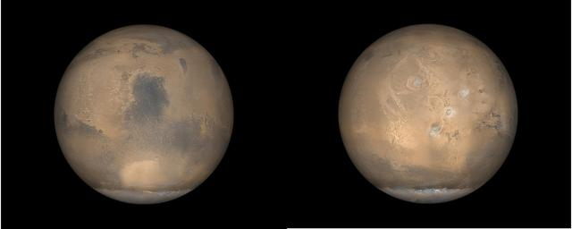
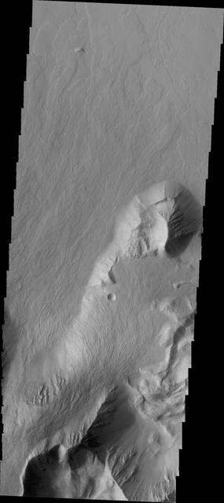

Mars
Mars is called the Red Planet because iron-rich dust gives its surface a rusty color. It has huge volcanoes and canyons, and there is evidence that water once flowed there.
Type
Rocky planet
Weather
Dust storms
Fun Fact
Home to Olympus Mons
Mars is called the Red Planet because iron-rich dust gives its surface a rusty color. It has huge volcanoes and canyons, and there is evidence that water once flowed there.
Rocky planet
Dust storms
Home to Olympus Mons
NASA IMAGE ARCHIVE


Mars has frozen water and a surface that scientists can study for clues about its past. Researchers are also looking for signs that life may once have existed there.
Choose a feature to learn a real fact about Mars.